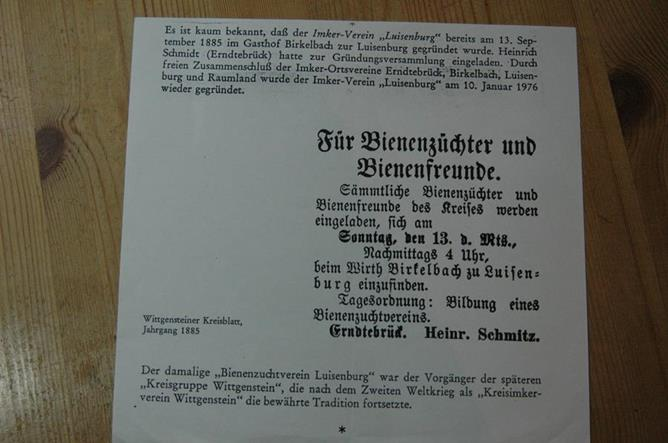

.jpg){kind=link}
Imkerversammlung im Oktober
19. Oktober 2026Am 19.10.2026 traf sich der Imkerverein Luisenburg um 18 Uhr im Vereinsheim am CJD. Themen waren neue Termine und Rückblicke sowie ein Ausblick auf das Leben und Imkern mit Vespa velutina.
Die Bienen kleben sich ihre Hosen an die Beine.
Der Imkerverein Luisenburg hat rund 70 Mitglieder in ganz Wittgenstein – und darüber hinaus.
Seit 2013 ist der Verein im Vereinsregister eingetragen und hat seinen Stammsitz im CJD Birkelbach/Erndtebrück.
Gegründet wurde der Verein bereits 1885. Leider ist viel Dokumentationsmaterial im Krieg verloren gegangen.
Der Kreisimkerverein Wittgenstein ist ein Verbund der fünf Imkervereine im Altkreis Wittgenstein: neben dem IV Luisenburg der IV Bad Berleburg, IV Diedenshausen, IV Feudingen und IV Bad Laasphe e.V.
Sein Vorstand setzt sich aus Imkern der einzelnen Vereine zusammen, trifft sich zweimal im Jahr und plant Aktionen rund um Imkerei und Biene: Futterausgabe, Gläserbestellung, Fahrten für Imker und Partner zu (bienen-)interessanten Orten, gesponserte Futterkranzproben und Mittelwände aus eigenem Wachs.

Am 19.10.2026 traf sich der Imkerverein Luisenburg um 18 Uhr im Vereinsheim am CJD. Themen waren neue Termine und Rückblicke sowie ein Ausblick auf das Leben und Imkern mit Vespa velutina.
Spätestens im Herbst 2027 ist eine Honigschulung mit Prüfung geplant. Sie findet im CJD statt, allerdings nur bei ausreichend Anmeldungen.
Anmeldung bei Juliane Berger: berger.juliane [at] gmx.de
Die Internetseite wächst weiter und freut sich über Hinweise. Wer interessante Informationen oder Bilder beitragen möchte, wendet sich gerne an Juliane Berger: berger.juliane [at] gmx.de